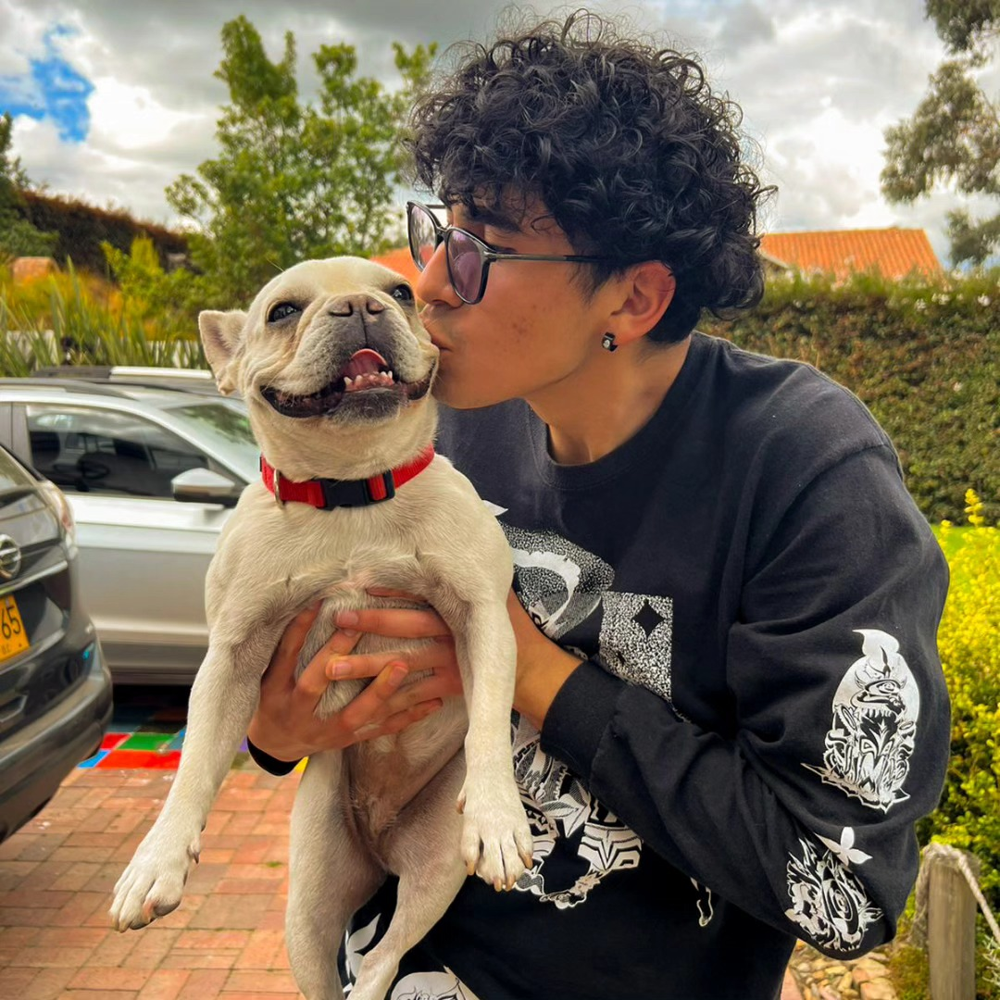

Fotografía · Retrato · Cine
Simón Rodríguez
Retratos que buscan la intimidad. Historias que buscan una mirada.

Sobre mí
La cámara como forma de acercarse.
Soy Simón Rodríguez, fotógrafo y estudiante de cine. Mi trabajo gira en torno al retrato: los rostros, los silencios y la cercanía que se construye entre quien mira y quien es mirado.
Busco la intimidad en cada fotografía — esos instantes que normalmente permanecen ocultos y que solo aparecen cuando hay confianza frente al lente. Actualmente combino la fotografía con la narrativa audiovisual, explorando el cortometraje como una extensión natural de esa misma mirada.
Fotografía
Retratos
Cine
Cortometraje
Contacto
Hablemos
Disponible para sesiones de retrato, colaboraciones y proyectos audiovisuales.